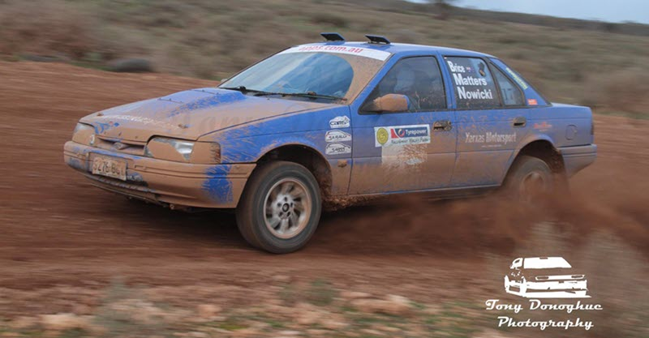

Tamara Jade Brice
Personal Information
Welcome to my webpage and thankyou for
taking the time to come and view it.
My name is Mara Jade, this
page contains some general information about me and my hobbies as well
as contact details at the bottom.
General Information:
Name: Tamara Jade Brice,
aka Mara JadeStudent Email: S3851505@student.rmit.edu.au
Websites:Xerxas Motorsport & Tamara Jade Info Website
Nationality: Australian, South Australian, Adelaide
Languages Spoken: English

Education to date:
I have been working in the
field of Telecommunications for 12 years, I originally entered the
field due to being CCNA qualified, while working with my current
employer I completed Certificate III in Telecommunications. I then
continued to focus on improving my CISCO qualifications and with
the assistance of my employer I have had the opportunity to
further my studies and completed:Cisco Certified Network Professional (CCNP)
Cisco Aggregation Services Router 9000 Series Essentials (CLS-ASR9KE)
Cisco Prime Collaboration Provisioning (CLS-PCP)
Managing Enterprise Networks with Cisco Prime Infrastructure (CLS-MENPI)
Configuring Border Gateway Protocol on Cisco Routers (BGP)
Deploying Cisco Wireless Enterprise Networks (WIDEPLOY)
Implementing Cisco Wireless Network Fundamentals (WIFUND)
Securing Cisco Wireless Enterprise Networks (WISECURE)
I also am certified to Design, Install & Manage: Meraki & Aruba Wifi Networks
Hobbies/Sport Pets Etc:
Outside of work I spend
a great deal of time working on my Rally Cars, I compete in the
South Australian Rally Championship (When funds permit) and I am
currently building a new Rally Car from scratch, using a 1994 ED
Falcon as the shell.I also enjoy playing D&D and I am currently a member of three groups two of which I currently DM.
I enjoy Cosplaying with my partner at events like AVCon and Supanova when they are in Adelaide and as part of our cosplaying I am currently working on a Star Wars 501st Imperial Guard Costume, that I hope to have finished this year.
I also spend time working with several volunteer organizations, Such as The Australian Communications Radio Monitors (ACRM for Short) who provide communications support using UHF radios and repeaters to local community events such as Cycling SA, The Barossa Airshow, Targa Rally Championship (Nationally) and many others.
As well as volunteering with ACRM I also volunteer with the Adelaide Brown Coats and Shine SA where we run charity event to raise money for Equality Now, The Cancer Council, Oxfam & Essentials 4 Women SA.
I have three adorable cats, Nightcrawler “Nighty”, Rocket Raccoon “Rocky”, Eevee (Yes like the Pokemon) and they are basically my children and I also am a little bit of a Nerd if you haven’t noticed and like all things Sci-Fi, High Fantasy and Pop culture.

Me driving my previous Ford Falcon in the 2016 Rally Sprint Championship